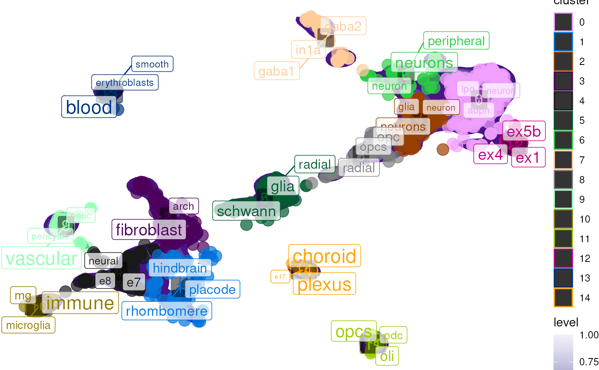

Plot tf-idf enrichment results in reduced dimensional space (e.g. PCA/tSNE/UMAP), Reduced dimensions can be computed based on single-cell data (e.g. RNA expression).
plot_tfidf(
obj,
reduction = "UMAP",
label_var = NULL,
cluster_var = "seurat_clusters",
replace_regex = "[.]|[_]|[-]",
terms_per_cluster = 3,
size_var = 1,
color_var = "cluster",
point_alpha = 0.7,
point_palette = c(unname(pals::alphabet()), rev(unname(pals::alphabet2()))),
density_palette = "Purples",
density_adjust = 0.2,
label_fill = ggplot2::alpha(c("white"), 0.7),
show_plot = TRUE,
background_color = "white",
text_color = "black",
force = c(0, 1),
max.overlaps = c(100, 100),
legend.position = NULL,
interact = FALSE,
force_new = FALSE,
verbose = TRUE,
...
)Single-cell data object.
Name of the reduction to use (case insensitive).
Which cell metadata column to input to NLP analysis.
Which cell metadata column to use to identify which cluster each cell is assigned to.
Characters used to split label_var into terms
(i.e. tokens) for NLP enrichment analysis.
The maximum number of words to return per cluster.
Point size variable in obj metadata.
Point colour variable in obj metadata.
Point opacity.
Point palette.
Density palette.
Density adjust (controls granularity of density plot).
Cluster label background colour.
Whether to print the plot.
Plot background colour.
Cluster label text colour.
Force of repulsion between overlapping text labels. Defaults to 1.
Exclude text labels when they overlap too many other things. For each text label, we count how many other text labels or other data points it overlaps, and exclude the text label if it has too many overlaps. Defaults to 10.
the default position of legends ("none", "left", "right", "bottom", "top", "inside")
Whether to make the plot interactive with plotly.
If NLP results are already detected the metadata,
set force_new=TRUE to replace them with new results.
Whether to print messages.
Additional arguments to be passed to
ggplot2::geom_point(aes_string(...)).
A list containing:
The processed data with TF-IDF results.
The full per-cluster TF-IDF enrichment results.
The ggplot object.
data("pseudo_seurat")
res <- plot_tfidf(obj = pseudo_seurat,
label_var = "celltype",
cluster_var = "cluster")
#> Extracting obsm from Seurat: umap
#> + Dropping 2 conflicting obs variables: UMAP.1, UMAP.2
#> Loading required namespace: tidytext
#> Setting cell metadata (obs) in obj.
#> Warning: `aes_string()` was deprecated in ggplot2 3.0.0.
#> ℹ Please use tidy evaluation idioms with `aes()`.
#> ℹ See also `vignette("ggplot2-in-packages")` for more information.
#> ℹ The deprecated feature was likely used in the scNLP package.
#> Please report the issue at <https://github.com/neurogenomics/scNLP/issues>.
#> Warning: Ignoring unknown aesthetics: label
#> Warning: Using `size` aesthetic for lines was deprecated in ggplot2 3.4.0.
#> ℹ Please use `linewidth` instead.
#> ℹ The deprecated feature was likely used in the scNLP package.
#> Please report the issue at <https://github.com/neurogenomics/scNLP/issues>.
